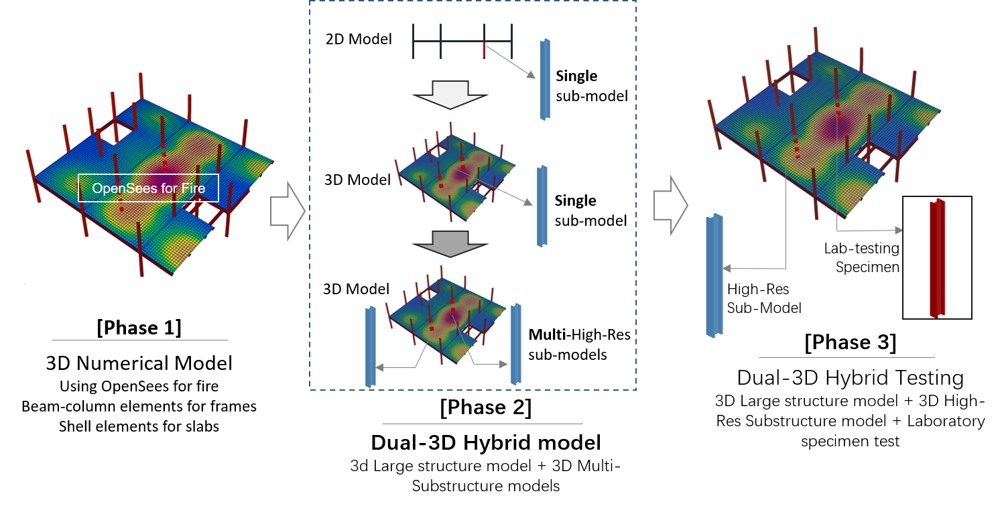
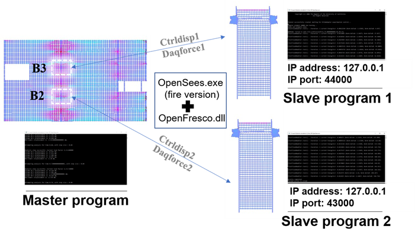
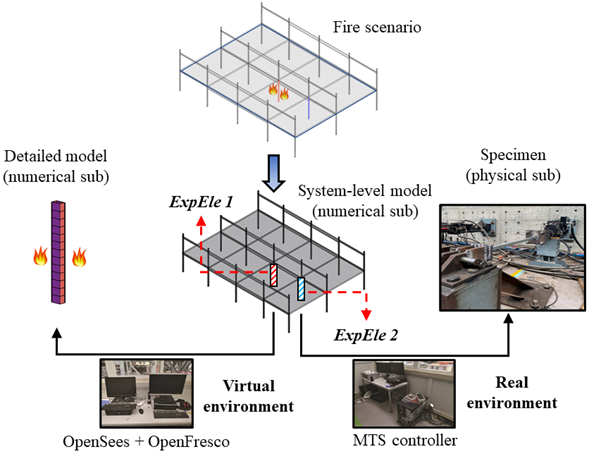

OpenSees and OpenFresco were developed for hybrid simulation that enables a sructural system model being synchronized with a physical specimen test. Based on the development of OpenSees for fire, we have been able to conduct hybrid fire simulation/testing using multiple subsructure models and spceimen test. Examples of conducting hybrid fire simulation can be found in the Example page.
The work takes advantage of the previous development in OpenSees for fire on modelling frame beams, columns and slabs subjected to various types of fires. We now use OpenFresco as the middleware to synchronize the 3D thermo-mechanical model with substructure models (typically beams, columns). These substructure models could be given as high-resolution virtual models using shell or solid elements or physical specimens in labortory. For more information that may be not avialable on this website, you could contact Dr Liming Jiang and Dr Xuesong Cai.
To cite this work, please refer to this paper: Dual-3D hybrid fire simulation for modelling steel structures in fire with column failure，2022
Before implementing hybrid simulation, we primarily developed analysis capabilities for including slabs in a 3D numerical model of structures in fire. This now can be done using shell elements with layered sections, which supports flat slabs and composite slabs with profiled steel and concrete ribs. The phase 2 of hybrid simulation/testing is carried out as a virtual scheme using 3D structural system model and multiple virtual substructure models. As shown in Fig.1, the Phase 3 will enter a stage using labortory specimens and virtual substructure models.
If taking the Cardington case discussed in the above paper as an example, when running the dual-3D hybrid simulation, the scripts for the two columns are routinely loaded in different command prompt windows of OpenSees for fire (Fig. 2). The OpenFresco has been compiled as a dynamic-link library (.dll) and placed in the same directory of OpenSees. Hence, the OpenFresco commands can be simultaneously activated when the command prompt receives a command “loadPackage OpenFresco”. Following the setup of the two slave programs, the modules are held awaiting the master program that is launched in the 3rd command prompt window of OpenSees for fire. If these two slave programs are running locally on the same computer (not necessarily), the default IP address “127.0.0.1” identified by OpenFresco as local server is assigned to the slave programs. To enable the connection of multiple sub-structures to the 3D structural model, two different ports (44000 and 43000) were assigned to the slave programs and the adapter elements. For more information, you could find it in the reference paper .
More recently, we have conducted hybrid testing with a 3D structural model (system-level behaviour) and a labortory specimen(synchronized test) and multiple high-resolution virtual models (for complex local behaviour), as shown in Fig.3.

model BasicBuilder -ndm 3 -ndf 6
# Load OpenFresco package
# -----------------------
# (make sure all dlls are in the same folder as openSees.exe)
loadPackage OpenFresco
...
element adapter 10000 -node 41031 -dof 1 2 3 -stif 1.0e6 0 0 0 4.8e6 0 0 0 7.5e10 42000
...
This page is created by Liming Jiang, 2016